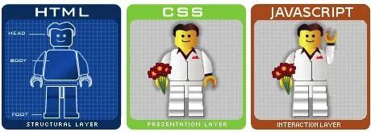
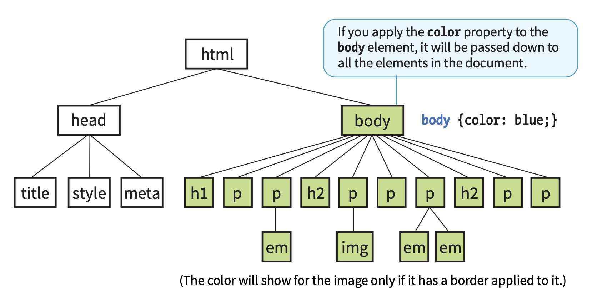
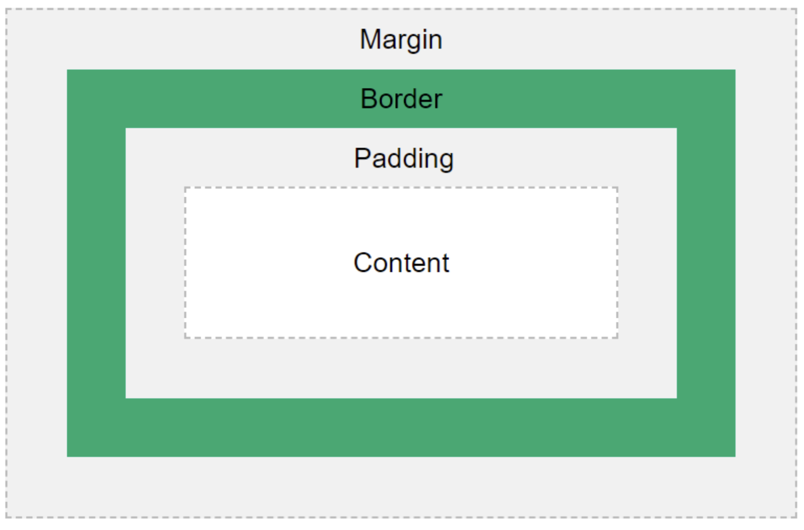
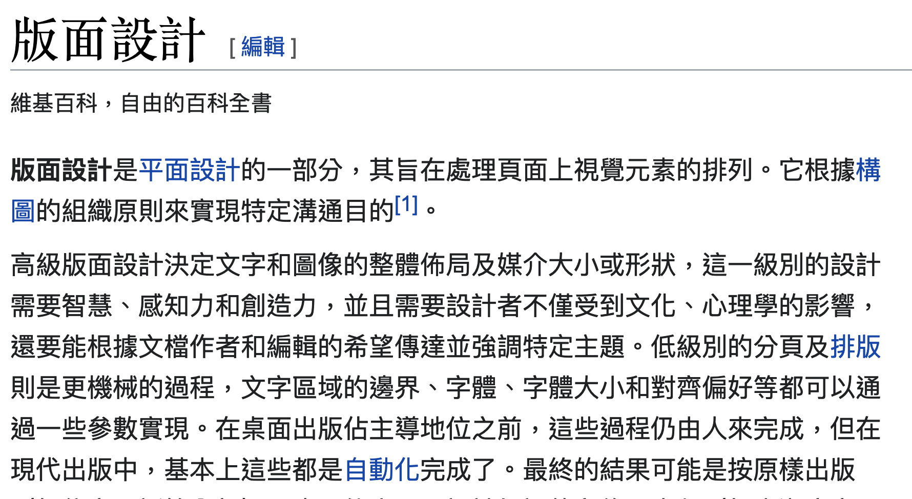

三個東西：HTML (內容)/ CSS (外觀)/ JavaScript（動作）

如何查詢 HTML/CSS/JavaScript 的語法 MDN Web Docs
HTML and CSS
HTML
CSS
HTML is a markup language that defines the structure of a web page to the browser, and CSS is a way for you to beautify the structure.
In reality, there have been tons of HTML and CSS templates or UI frameworks lying around. You may not need to write them from scratch. But still, how to translate content into logical structure is always a job of developer.
一開始在專案還沒有很複雜前，為免因為大家作業系統與環境版本差異造成影響，通常會先使用 Codepen 來練習基本概念，或是更互動的 Scrimba，等到專案更複雜之後，我們會再使用其他開發工具。
Codepen
Scrimba
不過我覺得大家好像可以直接用 vscode 來當開發環境（因為可以善用如 copilot或tabnine等 pair-programming 的工具）。
vscode
copilot
tabnine
Vscode
可以安裝的 extensions 有很多，但我們先安裝 Live Server， Live Preview。
extensions
Live Server
Live Preview
這些 extensions 可以讓我們在 vscode 中直接開啟一個 server，並且可以在(內部或外部)瀏覽器中即時看到我們的網頁變化。
先開啟新檔案，並且命名為 index.html，並且在第一行打入!，再按下 tab，就會自動產生一個 html 的 template。
index.html
!
tab
接著在 index.html 中，加入<h1>Hi</h1>，SAVE。
<h1>Hi</h1>
Live preview
open in default browser
在同一個目錄下，新增一個 style.css，並且在 index.html 中，</head> 之前 加入 <link rel="stylesheet" href="style.css">這一行，SAVE。
style.css
</head> 之前
<link rel="stylesheet" href="style.css">
接著在 style.css 中，加入 h1 {color: red;}，SAVE。
h1 {color: red;}
Tip: 按住 style.css 右鍵 (split down)，就可以同時看到 index.html 與 style.css 的變化。
split down
.html
.htm
用 index.html 看一下基本結構 (template)：
<!DOCTYPE html> <html> <head></head> <body></body> </html>
單標籤與雙標籤： HTML 標籤通常是成對出現的，像是 <p> 和 </p>，開始標籤和結束標籤。
<p>
</p>
層級標籤和非層級標籤： HTML 標籤可以分為層級標籤和非層級標籤。層級標籤是指標籤內可以包含其他標籤，而非層級標籤則不行。
<a>
href
<a href="#main">跳到 main 所在位置</a>
id
class
style
src
alt
這裡提醒一下這三個術語的區分 Tags vs Elements vs Attributes in HTML
<!--
-->
<!-- 這是一個註釋 -->
<form>
action
method
get
post
<input>
type
name
text
password
radio
checkbox
submit
reset
button
file
hidden
image
number
range
date
month
week
time
datetime
datetime-local
email
url
search
tel
color
<form action="https://www.google.com/search" method="get"> <input type="text" name="q" /> <input type="submit" value="搜尋" /> </form>
有三種方法來表示顏色：
green
#ff0000
rgb(255, 0, 0)
<
>
之前
<div> <div> <ul> <li><a href="#">Home</a></li> <li><a href="#">About</a></li> <li><a href="#">Contact</a></li> </ul> </div> </div>
現在
<header> <nav> <ul> <li><a href="#">Home</a></li> <li><a href="#">About</a></li> <li><a href="#">Contact</a></li> </ul> </nav> </header>
使用 Non-semantic 與 Semantic element 寫出來的網頁幾乎是一樣的，但對於搜尋引擎而言可以一眼看出整體網頁的結構。（某種 semantic web 的實作）。
在w3schools上自選幾個主題來練習 HTML 語法。
配合小抄
網頁的渲染流程大致上就是瀏覽器將 HTML 變成人眼看到的圖像的全過程。
可以分為三個階段：
External, Internal, Inline
<link>
<head>
<head> <link rel="stylesheet" type="text/css" href="mystyle.css" /> </head>
<style>
<head> <style> body { background-color: linen; } h1 { color: maroon; margin-left: 40px; } </style> </head>
<p style="color: red;">This is a paragraph.</p>
inheritance, conflicting styles and cascading order, the box model, and grouped selectors.
document tree

CSS 允許我們對同意文件施行不同的 style sheets， 那就會註定有衝突的問題。 The cascade refers to what happens when several sources of style information vie for control of the elements on a page. The 'cascade' is the process of combining the different stylesheets and resolving conflicts between different CSS rules and declarations.
誰權值更高，優先性更高，就會被套用。權值的考量，則是基於以下幾個因素：the priority of the style rule source, the specificity of the selector, and the order of the style rules.
!important
p { color: blue !important; }
<style> p {color:blue;} p {color:red;} </style>
div
p

p, h1, h2 { color: red; }
絕對單位：
相對單位：
其他：如角度 (deg)、弧度 (rad)、時間 (s)、頻率 (Hz) 等。
deg
rad
s
Hz

*
#id
.class
* { color: red; }
背景、大小、文本、邊距、邊框、浮動、顯示、定位、（列表、表格、鏈接、內容、計數器、頁面、字型、動畫、轉換、過渡、多欄、多頁、多媒體、使用者介面、印刷、標準、其他）
background-color
font-size
font-weight
text-align
小抄隨手參考 !!!
文字的字體(font-family)、尺寸(font-size)、粗細(font-weight)、樣式(font-style)、間距(letter-spacing)、行高(line-height)、對齊(text-align)、裝飾(text-decoration)、變形(text-transform)、顏色(color)、。。。
font-family
font-style
letter-spacing
line-height
text-decoration
text-transform
Adobe 思源體和 Google Noto 體的故事: 兩間公司的合作的成果，免費開放給大家使用。
@font-face
練習：在 Google Font 上找到一個字型和 icon，並在 HTML 中使用（via <link> or @import）。
@import
p { color: red; }
請建立一個 HTML 檔案 (ntu.html)，並在其中加入一個段落，內容為「台大校歌」，並將文字的顏色設定為紅色。
ntu.html
在</head> 之前加入 <link rel="stylesheet" href="style.css" />，並建立一個 style.css 檔案，並在其中開始加入 CSS 規則。例如段落的縮排設定為 2em，文字顏色為 navy。
</head>
<link rel="stylesheet" href="style.css" />
navy
p { text-indent: 2em; color: navy; }
做一個台大校歌「隨手卡」
成果
兩者是 CSS3 的一個排版新功能，可以讓我們更容易的設計網頁的版面配置。 Flexbox 是用來設計一維的版面配置，而 Grid 是用來設計二維的版面配置。
Flexbox
Grid
Flexbox：參考這個教學文件
Grid：參考這個教學文件
Markup is a generic term for a language that describes a document's formatting, while Markdown is a specific markup library doing text-to-HTML conversion
html
<ul> <li>Item one</li> <li>Item two</li> </ul>
markdown
- Item one - Item two
Chrome 開發人員工具 (Developer Tools)：F12 或 Ctrl + Shift + I。
F12
Ctrl + Shift + I
Firefox 開發人員工具 (Developer Tools)：F12 或 Ctrl + Shift + I。
教學
回去請把 w3schools 的 HTML 和 CSS 的教學(至少 tutorial 的部分)都走一遍，並且練習一下。
請利用 html 與 css 實作一個(靜態)網頁，接近你之前用 streamlit做出來的 app 樣子。[作業上傳]（https://classroom.github.com/a/WrDhFilJ）。
css
streamlit
(`Live Server` 與 `Live Preview` 就可以了。 Saas compiler )
(安裝完後，點選左下角的 `Go Live` 就可以開啟一個 server 了。)
> 從瀏覽器底層的角度來說，Rendering 是指 painting 的過程，也就是解析 DOM 並把它在螢幕上呈現的過程。